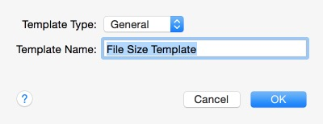

Rule Templates
From the "Rules" panel of a Synchronizer document, you can save a highlighted rule as a template or add a rule from a saved rule template. Three types of rule templates are supported: "General", "Inclusion", and "Exclusion". The template type is used to differentiate how the rule is to be used. " General" indicates that the rule can be used in either inclusion or exclusion lists. "Inclusion" indicates that the rule can only be used in inclusion lists. "Exclusion" indicates that the rule can only be used in exclusion lists.
Follow these steps to add a Rule Template:
- While in "Intermediate" or "Advanced" rule mode, select
 to add a rule. Choose "Create your own rule of the following type:" and pick the particular rule you wish to make into a template. You may also select
to add a rule. Choose "Create your own rule of the following type:" and pick the particular rule you wish to make into a template. You may also select  to add a rule group. If you plan to have a template with several rules defined, a rule group would be the way to go.
to add a rule group. If you plan to have a template with several rules defined, a rule group would be the way to go.
- Once you create your rule or group, select it in the "Rules" panel list.
- To define the template, choose . A sheet will drop down for you to supply a template type and name.

- After supplying this information, choose "OK" to close the window. Your rule template has now been defined and will be saved for future use.
Follow these steps to use a Rule Template:
- While in "Intermediate" or "Advanced" rule mode, select to add a rule. Choose "Or choose from one of the predefined rules:" and pick the particular template you wish to use from the popup menu.
- Choose "OK" and the rule (or rule group) will appear in the "Rules" panel list.